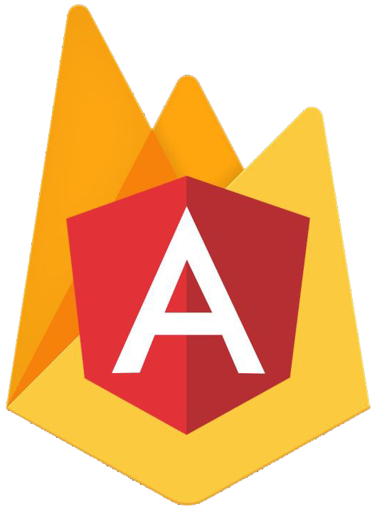

<nav class="navbar navbar-expand-lg navbar-dark px-5" style="background: #2a7cd3">
  <a class="navbar-brand d-flex algin-items-center" href="#"> <span class="mx-2 my-auto">Angular<strong>Firebase</strong> </span></a>
  <button class="navbar-toggler" type="button" data-toggle="collapse" data-target="#navbarSupportedContent" aria-controls="navbarSupportedContent" aria-expanded="false" aria-label="Toggle navigation">
    <span class="navbar-toggler-icon"></span>
  </button>

  <div class="collapse navbar-collapse" id="navbarSupportedContent">
    <ul class="navbar-nav ml-auto">
      <li class="nav-item active">
        <a class="nav-link" href="#">Home <span class="sr-only">(current)</span></a>
      </li>
      <li class="nav-item ">
        <a class="nav-link" (click)="logout()">Cerrar sesión</a>
      </li>
    </ul>
   
  </div>
</nav>